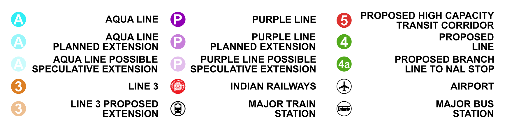
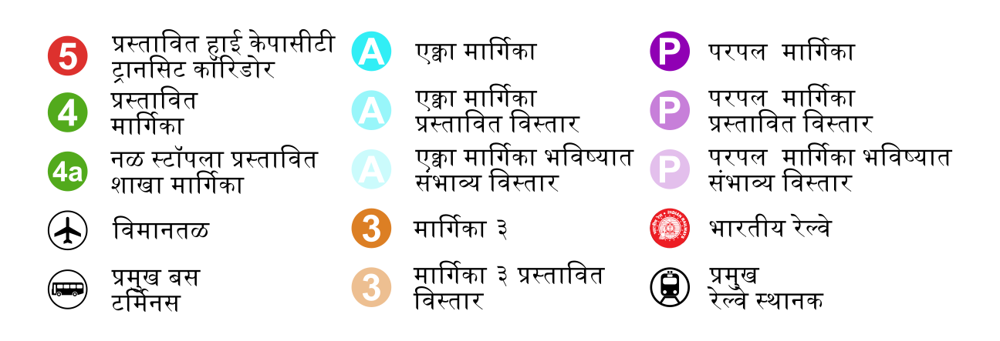
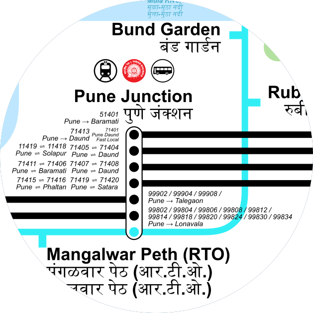
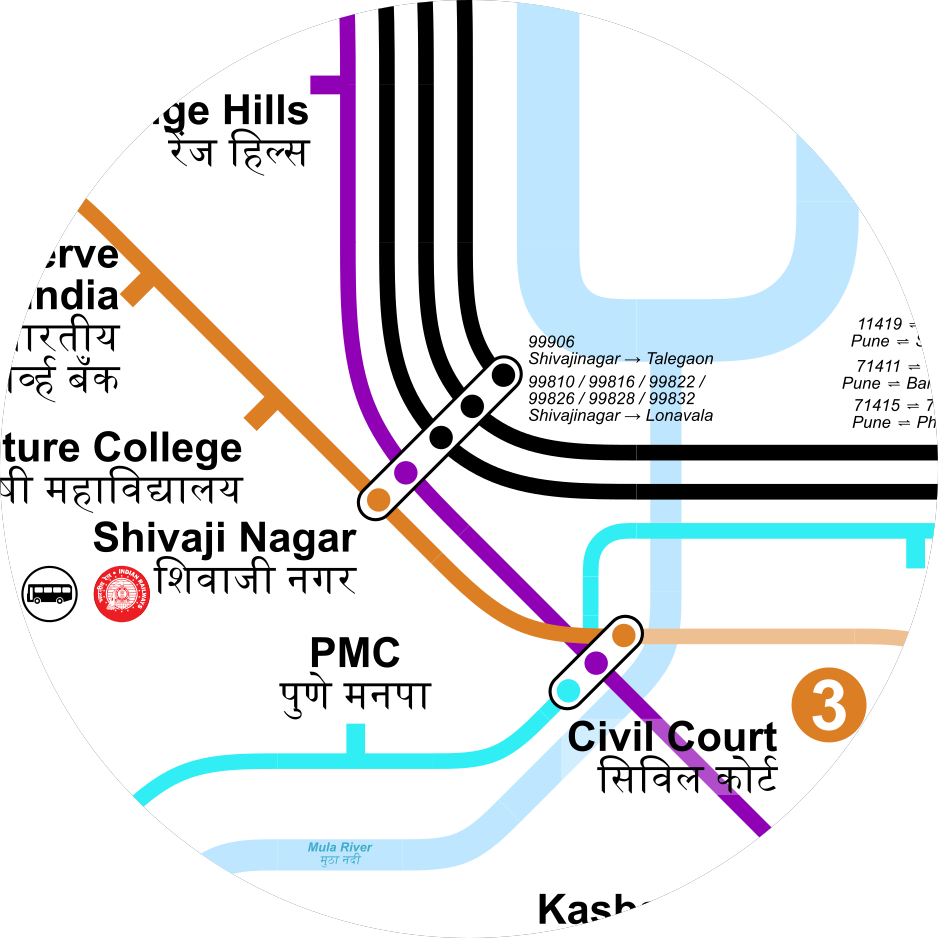
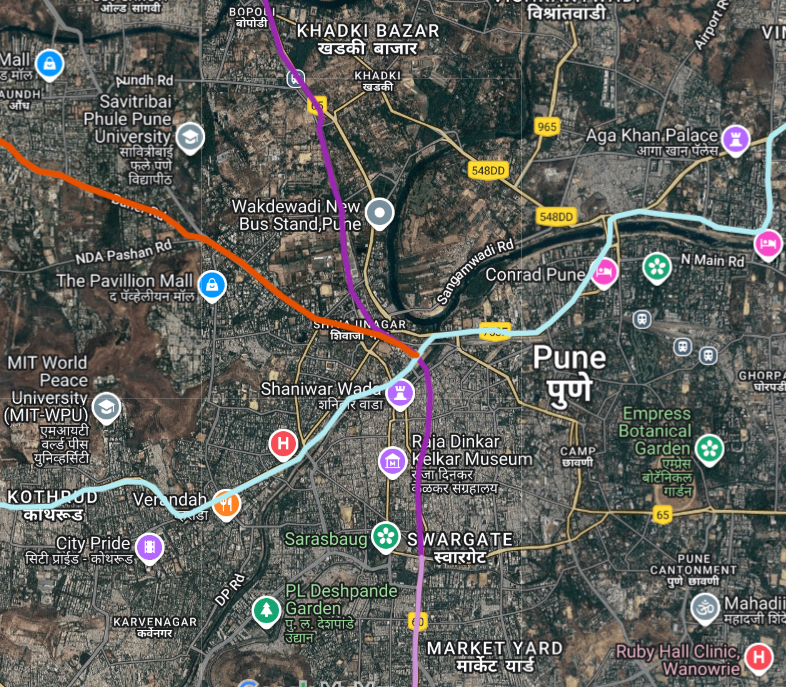
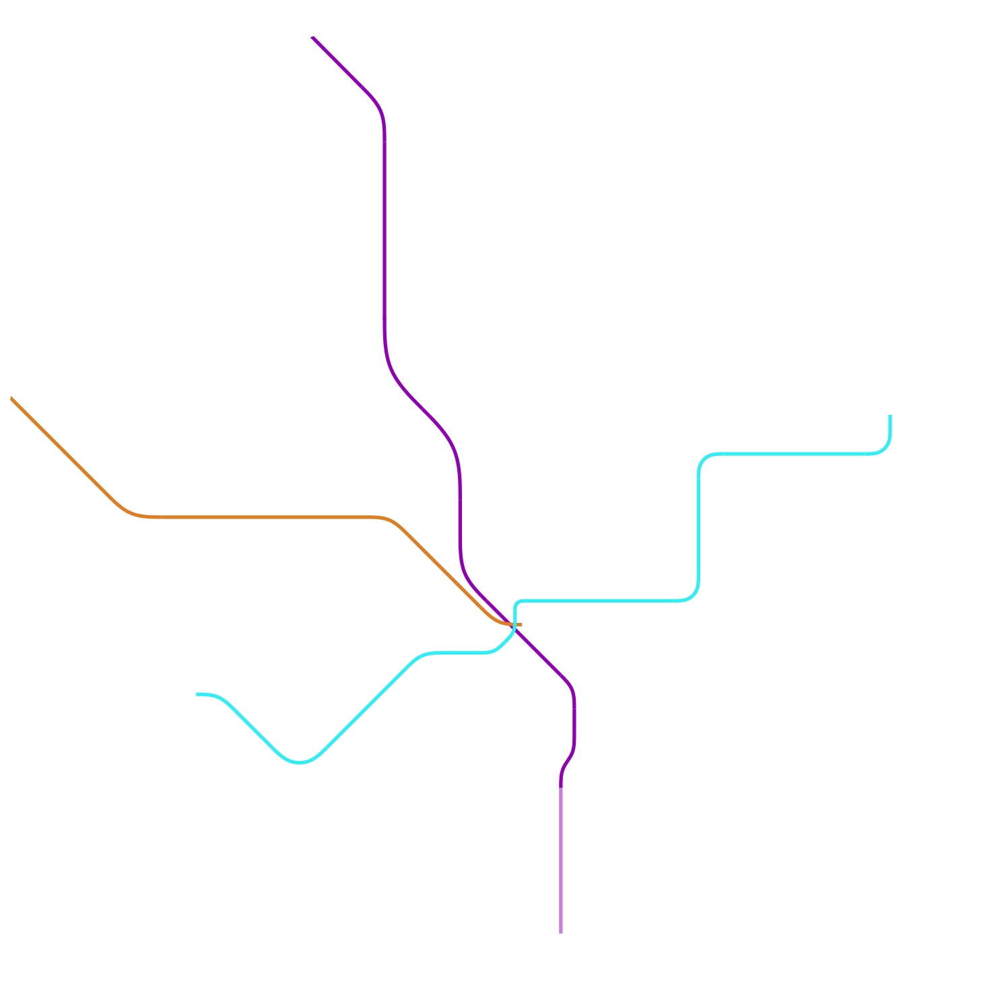

SCHEMATIC MAP OF PUNE METRO AND SUBURBAN RAILWAY
MAP BREAKDOWN

-All the lines are colour coded with their numbers.
-Suburban Train Number is provided at the first and last stations of the service

-All the labels are in Hindi and Marathi apart from English.

Pune Junction remains the primary transportation hub with multiple Indian Railways routes converging and the Line 3 Metro represented in Orange.

-Shivajinagar is another major transportation hub with 2 metro lines interchanging with Indian Railways.
-Civil Court is the metro hub with 3 metro lines converging together at the station.
-Civil Court is the metro hub with 3 metro lines converging together at the station.


-The geographical routes was identified using Google Maps.
-The stations were equally placed alone the lines.